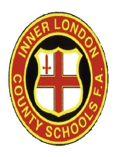
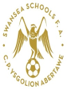
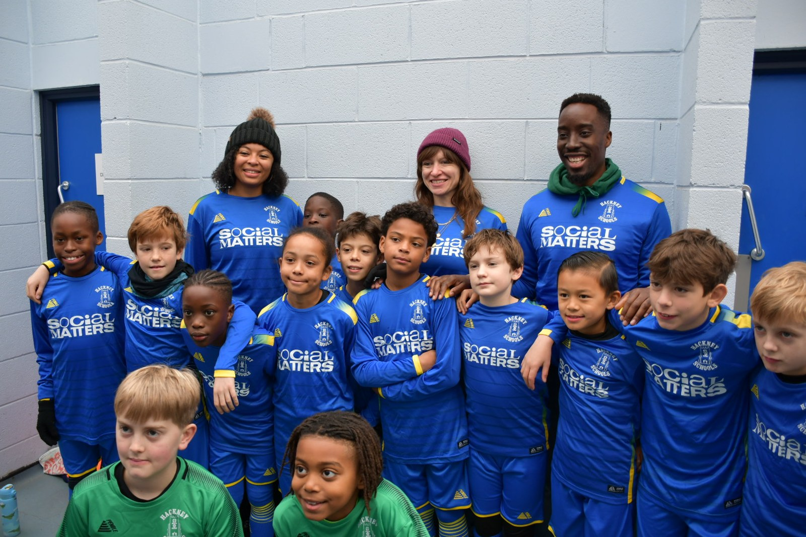
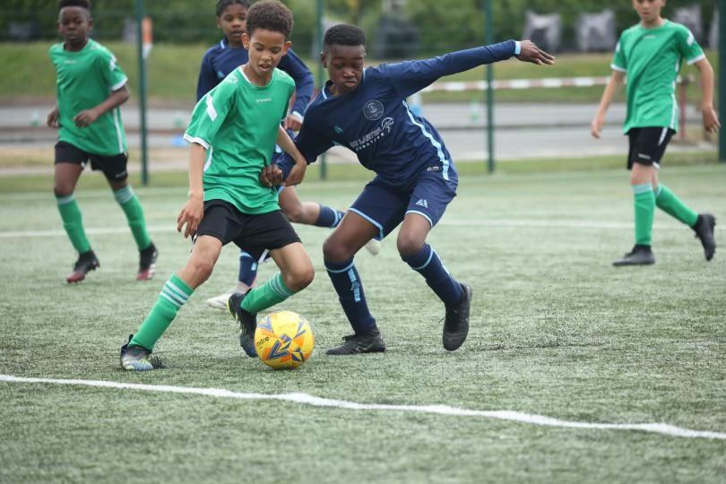
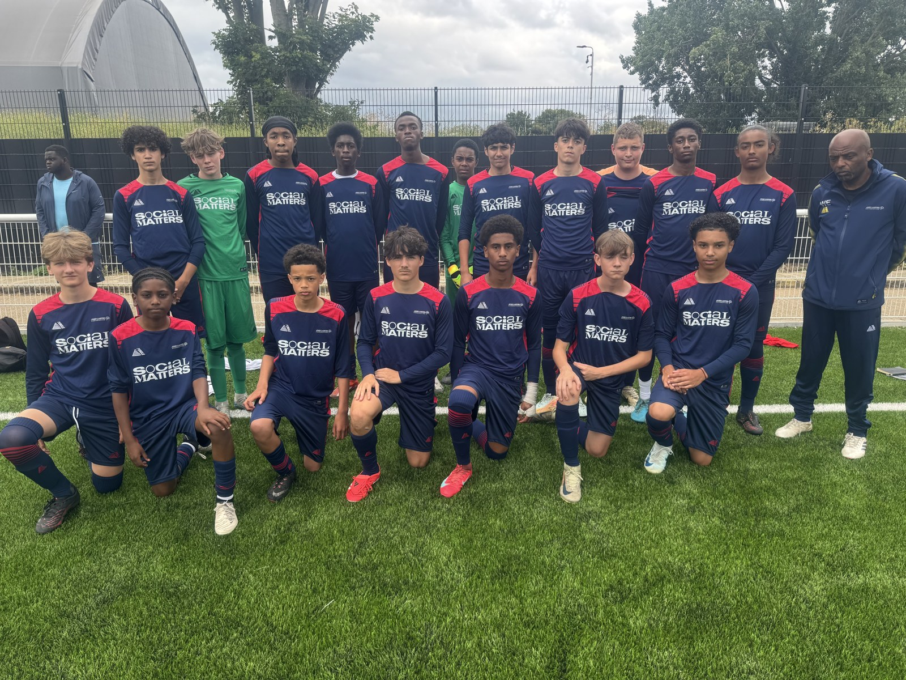
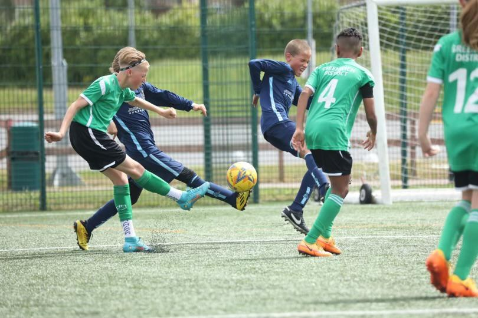

Schools FA Contacts & HSAA Supporters
The organisations connected with and supporting HSAA.
Schools FA contacts and supporters
HSAA works with and is supported by organisations across school sport and the wider community.

Inner London County Schools FA
Swansea Schools FAInner London County Schools Football Association
Established in 1974, Inner London County Schools FA serves schools and districts across Inner London. Hackney is affiliated to the association.
It delivers county competitions for secondary schools in Years 7–13, and primary district competitions: the Kay Trophy for Under-11 boys in Year 6 and the John Larter Girls District Trophy for girls in Years 5 and 6.
Its representative programme includes boys’ Under-14, Under-15 and Under-16 teams and girls’ Under-14 and Under-15 teams. Trials are held to identify players from across the county.
Contact
The supplied contact is Michael MacNeill, Honorary Secretary. For an introduction or the current contact details, get in touch with HSAA.
Support HSAA
If you are keen to support HSAA’s work, please contact HSAA to discuss how you can help.
Former district players can also join the Hackney District Players Alumni Network.

Hackney District & Association Illuminaries
Former players, association figures and the District Players Alumni Network.
- Former district players
- Association and district figures
- Join the District Players Alumni Network
From Hackney to professional football
HSAA’s archive recognises the following former district players. The clubs and international teams listed are career highlights, rather than complete playing records or current club affiliations.
| Player | Clubs and international teams |
|---|---|
| Eddie Baily | Tottenham Hotspur; England |
| Tommy Harmer | Tottenham Hotspur |
| Ron Harris | Chelsea |
| Allan Harris | Queens Park Rangers |
| Rodney Marsh | Queens Park Rangers; Manchester City; Fulham; England |
| John Pratt | Tottenham Hotspur |
| Keith Weller | Chelsea; Leicester City; England |
| Albert Murray | Chelsea |
| Steve Bryant | Portsmouth |
| Mark Falco | Tottenham Hotspur; Watford; Rangers |
| Des Walker | Nottingham Forest; Sampdoria; Sheffield Wednesday; England |
| John Reeves | Fulham |
| Billy Manuel | Gillingham; Brentford |
| Jimmy Carter | Millwall; Arsenal; Liverpool |
| Tony Parks | Tottenham Hotspur |
| Ricky Otto | Leyton Orient; Birmingham City |
| Mario Walsh | Portsmouth; Torquay United |
| Ronnie Mauge | Bury; Plymouth Argyle; Manchester City; Trinidad and Tobago |
| Kevin Watson | Tottenham Hotspur; Swindon Town; Rotherham United; Reading; Colchester United |
| Jeff Minton | Tottenham Hotspur; Brighton; Port Vale; Leyton Orient |
| Leon Constantine | Millwall; Leyton Orient; Southend United; Port Vale; Leeds United |
| Ijah Anderson | Brentford |
| Ugo Ehiogu | Aston Villa; Middlesbrough; Rangers; Sheffield United; Leeds United; England |
| Ade Akinbiyi | Leicester City |
| Kevin Lisbie | Leyton Orient; Charlton Athletic; Colchester United; Ipswich Town |
| Lloyd Doyley | Watford |
| Elliott ‘Junior’ Omozusi | Leyton Orient; Fulham |
| Bradley Johnson | Blackburn Rovers; Derby County; Leeds United; Norwich City |
| Shaquille Coulthirst | Tottenham Hotspur; Barnet |
| Sean Clare | Charlton Athletic; Sheffield Wednesday; Heart of Midlothian; Leyton Orient |
| Tayo Edun | Fulham; Blackburn Rovers; Peterborough United; Stockport County |
| Jaidon Anthony | Arsenal academy; AFC Bournemouth; Brentford |
| Sonny Perkins | West Ham United; Leeds United; Leyton Orient |

Association and district figures
People and roles recorded in the HSAA archive.
| Name | Role recorded in the archive |
|---|---|
| George Sparkes | Hackney District Manager; predecessor to John Larter MBE |
| Glyn Williams | Former HSAA Chair; remembered by the Glyn Williams Cup |
| John Larter MBE | Hackney District Manager, 1971–2020; in remembrance |
| David Grisdale | HSAA Honorary General Secretary, 1974–2020; in remembrance |
| David Le Fevre | School sports and HSAA Honorary Vice President |
| Brian Willerton | HSAA Chair, 1974–2019 |
| Enid Grisdale | HSAA Patron, appointed 2019 |
| Tom Pirnie | Hackney District Coach, 1968–2002; in remembrance |
| Chas Mangion | Hackney District Coach, from 1993 |
| David Crockatt | HSAA President, from 1989 |
Remembering John Larter MBE
John managed Hackney District from 1971 to 2020. His contribution to school and grassroots football is recognised by the John Larter MBE Foundation, established in 2016. He died in December 2020.
Remembering David Grisdale
David joined HSAA in 1968 and served the association for more than fifty years. He was Honorary General Secretary for over forty years, until his death in October 2020.
Hackney District Players Alumni Network
More than 2,000 boys and girls have represented Hackney District since the 1960s. The network aims to help former players find one another, stay in touch and support the next generation of district teams.
If you represented Hackney, share your experiences and memories, reconnect with your teammates, and help spread the word to other former players.
The network seeks human and financial support for HSAA. It is keen to establish a fundraising committee and organise events for members. Ideas include an annual gathering, race night, curry night and quiz evening, alongside updates through the season.
Membership
The supplied membership form sets an annual fee, payable each 1 September, of £5 for juniors under 18 and £10 for seniors aged 18 and over. HSAA will contact applicants with payment details and further information after receiving their form.
Download the blank membership form (Word, 24 KB), or prepare a membership email below.
This form opens your email app for you to review and send your details to HSAA. No membership payment is taken on this site.
John Larter MBE Foundation
A development pathway inspired by John’s contribution to grassroots football.
Continuing John’s work
The John Larter Foundation was established in 2016 to recognise and acknowledge John Larter’s lifetime contribution to schools and grassroots football in Hackney, London and beyond.
John believed talented young footballers from Hackney should have the same pathways and opportunities as their counterparts elsewhere to develop their game and showcase their ability. The foundation was set up to support and build on that philosophy.

A pathway beyond primary district football
The foundation’s programme builds on the work of Hackney Primary District, whose representative team is for Year 6 children aged ten to eleven. It is designed to provide a developmental route after that district season.
The programme takes the boys’ group from the start of Year 7 and offers opportunities over a three-year period. It aims to enrich their football experience, develop their talent and open routes to further opportunities.
Powered and supported by Sports Empire Group
For information about the foundation and its programmes, get in touch with HSAA.
District Competitions
The Kay Trophy, John Larter Girls District Trophy and Lester Finch Trophy archive.
Kay Trophy
The Kay Trophy is Inner London County Schools FA’s primary district competition for Under-11 boys in Year 6. It is among the competitions contested by Hackney’s boys’ district team.
Hackney has won the trophy eight times, most recently in 2024–25. Contact HSAA for competition arrangements, fixtures and the latest results.
John Larter Girls District Trophy
Inner London County Schools FA organises the John Larter Girls District Trophy for girls in Years 5 and 6. Hackney’s girls’ district team takes part in the competition.
Hackney became Inner London County Schools FA Girls Counties District Champions in 2022–23 and 2025–26. Contact HSAA for the latest competition arrangements.
Lester Finch Trophy
HSAA organises the Lester Finch Trophy as an invitation event for Greater London districts.

Roll of honour
The archive below covers the supplied records from 1966–67 to 2025–26. Joint winners are shown together. No entry was supplied for 1976–77, 1979–80, 1994–95 or 1995–96.
The archive lists four Hackney wins, while the association introduction states five. The total is awaiting confirmation.
| Season | Winner(s) |
|---|---|
| 1966-67 | Tottenham |
| 1967-68 | Harrow |
| 1968-69 | Barnet & Brent |
| 1969-70 | Haringey |
| 1970-71 | East London |
| 1971-72 | Brent |
| 1972-73 | Brent |
| 1973-74 | Harrow |
| 1974-75 | Sutton |
| 1975-76 | South London |
| 1977-78 | Hackney |
| 1978-79 | Harrow |
| 1980-81 | East London |
| 1981-82 | Haringey |
| 1982-83 | East London |
| 1983-84 | Tower Hamlets |
| 1984-85 | Brent |
| 1985-86 | Hackney |
| 1986-87 | Harrow & Barnet |
| 1987-88 | Tower Hamlets |
| 1988-89 | Tower Hamlets |
| 1989-90 | Tower Hamlets |
| 1990-91 | Harrow |
| 1991-92 | Tower Hamlets |
| 1992-93 | Islington |
| 1993-94 | Hackney |
| 1996-97 | Wandsworth |
| 1997-98 | Tower Hamlets |
| 1998-99 | Croydon |
| 1999-00 | Bermondsey & Rotherhithe |
| 2000-01 | Tower Hamlets |
| 2001-02 | Islington |
| 2002-03 | Newham |
| 2003-04 | South London & Newham |
| 2004-05 | South London |
| 2005-06 | Hackney |
| 2006-07 | Brent |
| 2007-08 | South London |
| 2008-09 | Thurrock & South London |
| 2009-10 | Barking & Dagenham |
| 2010-11 | Harrow |
| 2011-12 | Thurrock |
| 2012-13 | Croydon |
| 2013-14 | Barnet |
| 2014-15 | Camden |
| 2015-16 | Bexley |
| 2016-17 | Bexley |
| 2017-18 | Thurrock |
| 2018-19 | Havering |
| 2019-20 | No Competition |
| 2020-21 | Chelmsford & Mid Essex |
| 2021-22 | Greenwich & Lewisham |
| 2022-23 | Barnet |
| 2023-24 | Havering |
| 2024-25 | Greenwich |
| 2025-26 | Chelmsford & Mid Essex |
Past winners totals — supplied archive
| District | Wins in supplied table |
|---|---|
| Tower Hamlets | 7 |
| Brent | 5 |
| Harrow | 5 |
| South London | 5 |
| Hackney | 4 |
| Thurrock | 3 |
| East London | 3 |
| Barnet | 2 |
| Bexley | 2 |
| Croydon | 2 |
| Haringey | 2 |
| Islington | 2 |
| Newham | 2 |
| Havering | 2 |
| Greenwich | 2 |
| Chelmsford & Mid Essex | 2 |
| Bermondsey & Rotherhithe | 1 |
| Camden | 1 |
| Lewisham | 1 |
| Sutton | 1 |
| Tottenham | 1 |
| Barking & Dagenham | 1 |
| Wandsworth | 1 |
These totals reproduce the supplied table. That table and the season-by-season list do not fully reconcile; corrected historical records can be sent to HSAA.
Report a district result ↗
District Football Results Service
Submit a district football result to HSAA.
Report a result
Please include the fixture date, both teams and the final score, and select the correct competition.
This service is for the Inner London Kay Trophy, John Larter Girls District Trophy and Lester Finch Trophy.
Complete the form to prepare an email to HSAA. Your email app opens for you to review and send it. Results are not sent or stored by this website.
Results and tables
Contact HSAA for the latest results, draws and league tables.